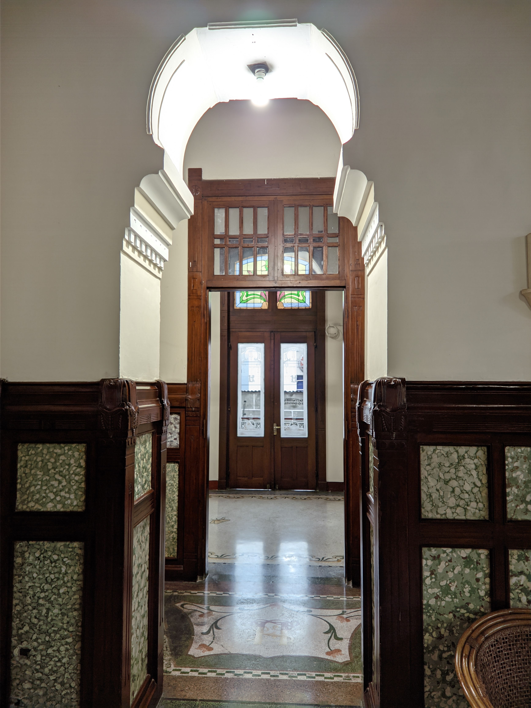
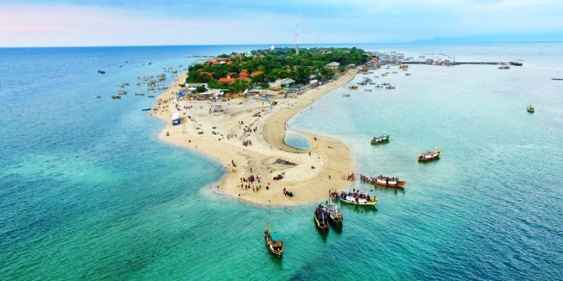

About Me
Saya adalah seorang mahasiswa semester dua yang sedang menempuh
pendidikan S1 program studi Sistem Informasi di Universitas
Pembangunan Nasional Veteran Jawa Timur. Saya merupakan pribadi yang
suka belajar hal-hal baru dengan kemampuan analisa yang baik dan
memiliki ketertarikan dibidang UI/UX dan cyber security.
Pendidikan
Sertifikasi
- Cloud Practitioner Essentials
- Architecting on AWS
- Belajar Dasar Google Cloud
- Belajar Machine Learning Untuk Pemula
- Belajar Membuat Aplikasi Android Untuk Pemula
Hobi
Selain ketertarikan dalam bidang IT, saya juga memiliki ketertarikan
untuk mengunjungi gedung-gedung tua bersejarah. Beberapa gedung
bersejarah di sekitaran Surabaya, Gresik, dan Lamongan sudah pernah
saya kunjungi. Selain itu, travelling juga merupakan salah satu hobi
yang saya miliki. Berikut merupakan salah satu destinasi yang sudah
sempat saya kunjungi
Hotel Niagara

Lokasi
Berlokasi di Lawang, Hotel Niagara merupakan gedung tua yang sudah
ada sejak 1918. Namun awalnya bangunan ini bukanlah bangunan
hotel, melainkan merupakan villa milik seorang pria keturunan
Brazil. Hingga akhirnya bangunan ini berpindah tangan beberapa
kali dan kini dikenal sebagai Hotel Niagara.
Hotel ini berdekatan dengan salah satu pasar yaitu Pasar Baru
Malang. Pasar tersebut beroperasi hingga malam hari. Mulai dari
buah-buahan khas Malang hingga sayur mayur tersedia di pasar
ini.Tak hanya itu saja, di jalan menuju ke Pasar Baru Lawang
tersebut juga terdapat banyak toko oleh-oleh khas Malang.
Wisatawan asal luar daerah tampak memadati daerah sekitaran sentra
oleh-oleh tersebut.
Gili Ketapang

Gili Ketapang merupakan salah satu destinasi wisata yang terletak
di wilayah Probolinggo. Wisata yang satu ini menawarkan
pemandangan pantai yang cantik sekaligus snorkeling. Penyedia jasa
menawarkan paket wisata yang biasanya sudah include transportasi
dari dermaga menuju ke Gili Ketapang, alat snorkeling, serta makan
siang.